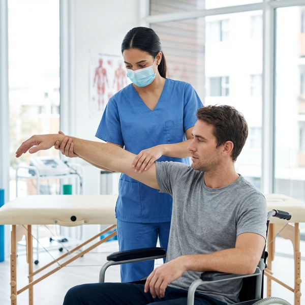

Stroke Rehabilitation in Mumbai: 5 Expert Tips for Home Recovery
October 15, 2025 | By Dr. Vidhi Dave, The Rehab House, Mumbai

Recovering from a stroke is a journey that requires patience, consistency, and the right approach. While professional rehabilitation is crucial, what you do at home matters just as much. At The Rehab House in South Mumbai, we emphasize a holistic approach.
1. Repetition is Key
Neuroplasticity—the brain's ability to rewire itself—relies on repetition. Repeat your prescribed exercises daily.
2. Focus on "Affected" Side
Try to use your weaker hand or leg as much as possible safely. This encourages the brain to reconnect with those muscles.
3. Stay Active
Avoid staying in bed all day. Sit up, stand, or walk with assistance to maintain muscle tone.
Need a personalized recovery plan? Contact our Mumbai clinic today or explore our Neuro-Rehabilitation Services.